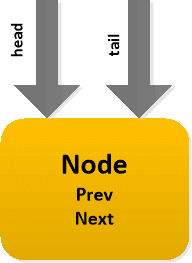
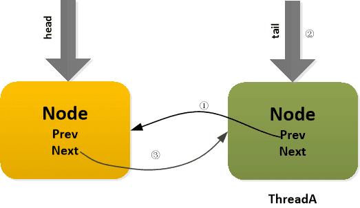

AbstractQueuedSynchronizer抽象类（以下简称AQS）是整个java.util.concurrent包的核心。AQS分离了构建同步器的一系列关注点
- 资源是可以被同时访问？还是在同一时间只能被一个线程访问？（共享/独占功能）
- 访问资源的线程如何进行并发管理？（等待队列）
- 如果线程等不及资源了，如何从等待队列退出？（超时/中断）
一、AQS简介
AbstractQueuedSynchronizer抽象类（以下简称AQS）是整个java.util.concurrent包的核心。在JDK1.5时，Doug Lea引入了J.U.C包，该包中的大多数同步器都是基于AQS来构建的。AQS框架提供了一套通用的机制来管理同步状态（synchronization state）、阻塞/唤醒线程、管理等待队列。
我们所熟知的ReentrantLock、CountDownLatch、CyclicBarrier等同步器，其实都是通过内部类实现了AQS框架暴露的API，以此实现各类同步器功能。这些同步器的主要区别其实就是对同步状态（synchronization state）的定义不同。
AQS框架，分离了构建同步器时的一系列关注点，它的所有操作都围绕着资源——同步状态（synchronization state）来展开，并替用户解决了如下问题：
- 资源是可以被同时访问？还是在同一时间只能被一个线程访问？（共享/独占功能）
- 访问资源的线程如何进行并发管理？（等待队列）
- 如果线程等不及资源了，如何从等待队列退出？（超时/中断）
这其实是一种典型的模板方法设计模式：父类（AQS框架）定义好骨架和内部操作细节，具体规则由子类去实现。
AQS框架将剩下的一个问题留给用户：
*什么是资源？如何定义资源是否可以被访问？*
我们来看下几个常见的同步器对这一问题的定义：
| 同步器 | 资源的定义 |
|---|---|
| ReentrantLock | 资源表示独占锁。State为0表示锁可用；为1表示被占用；为N表示重入的次数 |
| CountDownLatch | 资源表示倒数计数器。State为0表示计数器归零，所有线程都可以访问资源；为N表示计数器未归零，所有线程都需要阻塞。 |
| Semaphore | 资源表示信号量或者令牌。State≤0表示没有令牌可用，所有线程都需要阻塞；大于0表示由令牌可用，线程每获取一个令牌，State减1，线程没释放一个令牌，State加1。 |
| ReentrantReadWriteLock | 资源表示共享的读锁和独占的写锁。state逻辑上被分成两个16位的unsigned short，分别记录读锁被多少线程使用和写锁被重入的次数。 |
综上所述，AQS框架提供了以下功能：
1.1 提供一套模板框架
由于并发的存在，需要考虑的情况非常多，因此能否以一种相对简单的方法来完成这两个目标就非常重要，因为对于用户（AQS框架的使用者来说），很多时候并不关心内部复杂的细节。而AQS其实就是利用模板方法模式来实现这一点，AQS中大多数方法都是final或是private的，也就是说Doug Lea并不希望用户直接使用这些方法，而是只覆写部分模板规定的方法。
AQS通过暴露以下API来让让用户自己解决上面提到的“如何定义资源是否可以被访问”的问题：
| 钩子方法 | 描述 |
|---|---|
| tryAcquire | 排它获取（资源数） |
| tryRelease | 排它释放（资源数） |
| tryAcquireShared | 共享获取（资源数） |
| tryReleaseShared | 共享获取（资源数） |
| isHeldExclusively | 是否排它状态 |
1.2 支持中断、超时
还记得Lock接口中的那些锁中断、限时等待、锁尝试的方法吗？这些方法的实现其实AQS都内置提供了。
使用了AQS框架的同步器，都支持下面的操作：
- 阻塞和非阻塞（例如tryLock）同步；
- 可选的超时设置，让调用者可以放弃等待；
- 可中断的阻塞操作。
1.3 支持独占模式和共享模式
1.4 支持Condition条件等待
Condition接口，可以看做是Obejct类的wait()、notify()、notifyAll()方法的替代品，与Lock配合使用。
AQS框架内部通过一个内部类ConditionObject，实现了Condition接口，以此来为子类提供条件等待的功能。
二、AQS方法说明
在本章第一部分讲到，AQS利用了模板方法模式，其中大多数方法都是final或是private的，我们把这类方法称为***Skeleton Method***，也就是说这些方法是AQS框架自身定义好的骨架，子类是不能覆写的。
下面会按类别简述一些比较重要的方法，具体实现细节及原理会在本系列后续部分详细阐述。
2.1 CAS操作
CAS，即CompareAndSet，在Java中CAS操作的实现都委托给一个名为UnSafe类，关于Unsafe类，以后会专门详细介绍该类，目前只要知道，通过该类可以实现对字段的原子操作。
| 方法名 | 修饰符 | 描述 |
|---|---|---|
| compareAndSetState | protected final | CAS修改同步状态值 |
| compareAndSetHead | private final | CAS修改等待队列的头指针 |
| compareAndSetTail | private final | CAS修改等待队列的尾指针 |
| compareAndSetWaitStatus | private static final | CAS修改结点的等待状态 |
| compareAndSetNext | private static final | CAS修改结点的next指针 |
2.2 等待队列的核心操作
| 方法名 | 修饰符 | 描述 |
|---|---|---|
| enq | private | 入队操作 |
| addWaiter | private | 入队操作 |
| setHead | private | 设置头结点 |
| unparkSuccessor | private | 唤醒后继结点 |
| doReleaseShared | private | 释放共享结点 |
| setHeadAndPropagate | private | 设置头结点并传播唤醒 |
2.3 资源的获取操作
| 方法名 | 修饰符 | 描述 |
|---|---|---|
| cancelAcquire | private | 取消获取资源 |
| shouldParkAfterFailedAcquire | private static | 判断是否阻塞当前调用线程 |
| acquireQueued | final | 尝试获取资源,获取失败尝试阻塞线程 |
| doAcquireInterruptibly | private | 独占地获取资源（响应中断） |
| doAcquireNanos | private | 独占地获取资源（限时等待） |
| doAcquireShared | private | 共享地获取资源 |
| doAcquireSharedInterruptibly | private | 共享地获取资源（响应中断） |
| doAcquireSharedNanos | private | 共享地获取资源（限时等待） |
| 方法名 | 修饰符 | 描述 |
|---|---|---|
| acquire | public final | 独占地获取资源 |
| acquireInterruptibly | public final | 独占地获取资源（响应中断） |
| acquireInterruptibly | public final | 独占地获取资源（限时等待） |
| acquireShared | public final | 共享地获取资源 |
| acquireSharedInterruptibly | public final | 共享地获取资源（响应中断） |
| tryAcquireSharedNanos | public final | 共享地获取资源（限时等待） |
2.4 资源的释放操作
| 方法名 | 修饰符 | 描述 |
|---|---|---|
| release | public final | 释放独占资源 |
| releaseShared | public final | 释放共享资源 |
三、AQS原理简述
我们在第一节中讲到，AQS框架分离了构建同步器时的一系列关注点，它的所有操作都围绕着资源——同步状态（synchronization state）来展开因此，围绕着资源，衍生出三个基本问题：
- 同步状态（synchronization state）的管理
- 阻塞/唤醒线程的操作
- 线程等待队列的管理
3.1 同步状态
*同步状态的定义*
同步状态，其实就是资源。AQS使用单个int（32位）来保存同步状态，并暴露出getState、setState以及compareAndSetState操作来读取和更新这个状态。
/**
* 同步状态.
*/
private volatile int state;
protected final int getState() {
return state;
}
protected final void setState(int newState) {
state = newState;
}
/**
* 以原子的方式更新同步状态.
* 利用Unsafe类实现
*/
protected final boolean compareAndSetState(int expect, int update) {
return unsafe.compareAndSwapInt(this, stateOffset, expect, update);
}
3.2 线程的阻塞/唤醒
在JDK1.5之前，除了内置的监视器机制外，没有其它方法可以安全且便捷得阻塞和唤醒当前线程。
JDK1.5以后，java.util.concurrent.locks包提供了LockSupport类来作为线程阻塞和唤醒的工具。
3.3 等待队列
等待队列，是AQS框架的核心，整个框架的关键其实就是如何在并发状态下管理被阻塞的线程。
等待队列是严格的FIFO队列，是Craig，Landin和Hagersten锁（CLH锁）的一种变种，采用双向链表实现，因此也叫CLH队列。
1. 结点定义
CLH队列中的结点是对线程的包装，结点一共有两种类型：独占（EXCLUSIVE）和共享（SHARED）。
每种类型的结点都有一些状态，其中独占结点使用其中的CANCELLED(1)、SIGNAL(-1)、CONDITION(-2)，共享结点使用其中的CANCELLED(1)、SIGNAL(-1)、PROPAGATE(-3)。
| 结点状态 | 值 | 描述 |
|---|---|---|
| CANCELLED | 1 | 取消。表示后驱结点被中断或超时，需要移出队列 |
| SIGNAL | -1 | 发信号。表示后驱结点被阻塞了（当前结点在入队后、阻塞前，应确保将其prev结点类型改为SIGNAL，以便prev结点取消或释放时将当前结点唤醒。） |
| CONDITION | -2 | Condition专用。表示当前结点在Condition队列中，因为等待某个条件而被阻塞了 |
| PROPAGATE | -3 | 传播。适用于共享模式（比如连续的读操作结点可以依次进入临界区，设为PROPAGATE有助于实现这种迭代操作。） |
| INITIAL | 0 | 默认。新结点会处于这种状态 |
AQS使用CLH队列实现线程的结构管理，而CLH结构正是用前一结点某一属性表示当前结点的状态，之所以这种做是因为在双向链表的结构下，这样更容易实现取消和超时功能。
next指针：用于维护队列顺序，当临界区的资源被释放时，头结点通过next指针找到队首结点。
prev指针：用于在结点（线程）被取消时，让当前结点的前驱直接指向当前结点的后驱完成出队动作。
static final class Node {
// 共享模式结点
static final Node SHARED = new Node();
// 独占模式结点
static final Node EXCLUSIVE = null;
static final int CANCELLED = 1;
static final int SIGNAL = -1;
static final int CONDITION = -2;
static final int PROPAGATE = -3;
/**
* INITAL： 0 - 默认，新结点会处于这种状态。
* CANCELLED： 1 - 取消，表示后续结点被中断或超时，需要移出队列；
* SIGNAL： -1- 发信号，表示后续结点被阻塞了；（当前结点在入队后、阻塞前，应确保将其prev结点类型改为SIGNAL，以便prev结点取消或释放时将当前结点唤醒。）
* CONDITION： -2- Condition专用，表示当前结点在Condition队列中，因为等待某个条件而被阻塞了；
* PROPAGATE： -3- 传播，适用于共享模式。（比如连续的读操作结点可以依次进入临界区，设为PROPAGATE有助于实现这种迭代操作。）
*
* waitStatus表示的是后续结点状态，这是因为AQS中使用CLH队列实现线程的结构管理，而CLH结构正是用前一结点某一属性表示当前结点的状态，这样更容易实现取消和超时功能。
*/
volatile int waitStatus;
// 前驱指针
volatile Node prev;
// 后驱指针
volatile Node next;
// 结点所包装的线程
volatile Thread thread;
// Condition队列使用，存储condition队列中的后继节点
Node nextWaiter;
Node() {
}
Node(Thread thread, Node mode) {
this.nextWaiter = mode;
this.thread = thread;
}
}
2. 队列定义
对于CLH队列，当线程请求资源时，如果请求不到，会将线程包装成结点，将其挂载在队列尾部。
CLH队列的示意图如下：
①初始状态，队列head和tail都指向空

②首个线程入队，先创建一个空的头结点，然后以自旋的方式不断尝试插入一个包含当前线程的新结点


/**
* 以自旋的方式不断尝试插入结点至队列尾部
*
* @return 当前结点的前驱结点
*/
private Node enq(final Node node) {
for (; ; ) {
Node t = tail;
if (t == null) { // 如果队列为空，则创建一个空的head结点
if (compareAndSetHead(new Node()))
tail = head;
} else {
node.prev = t;
if (compareAndSetTail(t, node)) {
t.next = node;
return t;
}
}
}
}
四、总结
本章简要介绍了AQS的思想和原理，读者可以参考Doug Lea的论文，进一步了解AQS。
直接阅读AQS的源码比较漫无目的，后续章节，将从ReentrantLock、CountDownLatch的使用入手，讲解AQS的独占功能和共享功能。